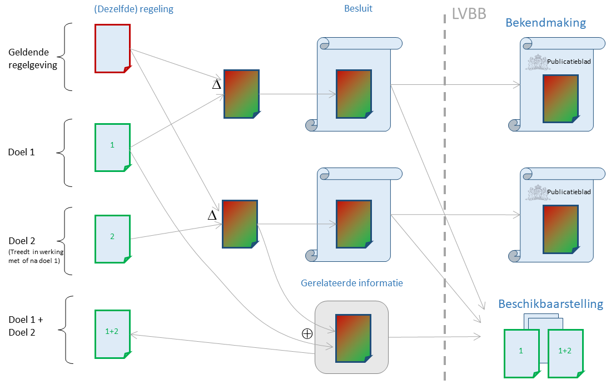

Oplossen van samenloop
Oplossen van samenloop
Versie 1.3.0 van STOP bevat nog niet de mogelijkheden om samenloop op te lossen.
Besluiten die geen rekening met elkaar houden
Als twee (of meer) besluiten geen rekening houden met elkaar en beide in werking treden, dan ontstaat er samenloop. Elk van de besluiten beschrijft een wijziging van een regeling ten opzichte van een eerder geldige versie van de regeling, maar uit de beschrijving van de wijzigingen blijkt niet hoe de wijzigingen uit beide besluiten gecombineerd moeten worden.

Deze situatie treedt bijvoorbeeld op als twee besluiten voor een verschillend doel zijn opgesteld. De besluiten bevatten via het renvooi-mechanisme de wijzigingen ten opzichte van een eerdere versie van de geldende regelgeving. Via de geautomatiseerde consolidatie is wel af te leiden hoe de geconsolideerde regeling luidt na inwerkingtreding van een van beide besluiten. Samenloop is te voorkomen door bij het opstellen van het tweede besluit de wijzigingen te beschrijven ten opzichte van de versie die geldig wordt na het eerste besluit. Dat kan niet altijd, bijvoorbeeld als er veel tijd zit tussen het aanbieden ter vaststelling van een besluit en de inwerkingtreding ervan.
Als de besluiten juridisch geen tegenstrijdigheden bevatten en bijvoorbeeld elk een ander deel van de regeling wijzigen, dan is voor het samenvoegen van de wijzigingen uit beide besluiten geen nieuw besluit nodig. Het bevoegd gezag kan de specificatie van de samenvoeging als gerelateerde informatie bij het tweede besluit meeleveren aan het bronhouderkoppelvlak bij de bekendmaking ervan, of bij het besluit dat de inwerkingtreding van het tweede besluit regelt. Als de besluiten wel juridische tegenstrijdigheden bevatten, dan moet de samenvoeging wél in een besluit worden vastgelegd. Als er sprake is van een apart inwerkingtredingsbesluit kan de samenvoeging daarin opgenomen worden, anders is een apart besluit nodig.
Het bevoegd gezag is verantwoordelijk voor de constatering of de samenloop al dan niet via een nieuw besluit bekendgemaakt moet worden. De geautomatiseerde consolidatie zoals beschreven in de standaard bevat daarom geen mechanisme om de wijzigingen in beide besluiten geautomatiseerd samen te voegen, hoewel dat tot op zekere hoogte wel mogelijk is. Het renvooi-mechanisme in STOP bevat daar voldoende informatie voor. De software van het bevoegd gezag mag natuurlijk wel het bevoegd gezag via automatisering ondersteunen bij het samenvoegen van de wijzigingen uit de verschillende besluiten.
De oplossing van de samenloop in STOP is gebaseerd op het renvooi-mechanisme zoals dat ook voor gedeeltelijke inwerkingtreding gebruikt wordt. Eerst wordt een versie samengesteld door twee versies samen te voegen: de regelgeving die geldig is voorafgaand aan de inwerkingtreding van de wijziging die voor de samenloop zorgt (in het voorbeeld is dat de versie die resulteert na inwerkingtreding van het eerste besluit) waaraan de onderdelen worden toegevoegd die door het tweede besluit gewijzigd zijn maar niet door het eerste besluit. Daarna wordt voor de onderdelen die door beide besluiten gewijzigd zijn en voor de onderdelen die aangepast moeten worden als de besluiten juridisch tegenstrijdig zijn met elkaar, via het standaard renvooi-mechanisme de aanpassingen aangegeven. Zo ontstaat een versie die de wijzigingen bevat die voor zowel doel 1 als doel 2 geschreven zijn.
Andere oorzaken van samenloop
Samenloop kan ook ontstaan door gebeurtenissen na de bekendmaking. Bijvoorbeeld als een beroepsorgaan een besluit vernietigd en het bevoegd gezag inmiddels een nieuw wijzigingsbesluit bekendgemaakt heeft dat gebaseerd is op de regelgeving die geldig werd vanwege het vernietigde besluit.
Een andere oorzaak is een besluit dat met terugwerkende kracht in werking treedt. De start van de geldigheid kan dan komen te liggen vóór de start van de geldigheid van een eerder bekendgemaakt besluit. De samenloop die opgelost moet worden is die tussen het besluit dat de wijziging met terugwerkende kracht beschrijft en de wijziging in het eerder bekendgemaakte besluit, op het moment van inwerkingtreding van het eerder bekendgemaakte besluit.
Het oplossen van de samenloop gaat op dezelfde manier: het bevoegd gezag maakt een samengestelde versie en stelt die aan de LVBB ter beschikking als de oplossing van de samenloop geen nieuw besluit vereist. Anders neemt het bevoegd gezag de oplossing op in het besluit dat de samenloop veroorzaakt (zoals bij een besluit met terugwerkende kracht) of in een nieuw besluit.
Zeker als de samenloop ontstaat door interventie van beroepsorganen kan het voorkomen dat de samenloop regelgeving betreft die in het verleden geldig was. Een bevoegd gezag is niet altijd verplicht volgens de Bekendmakingswet en gerelateerde regelgeving om een oplossing voor de ontstane samenloop beschikbaar te stellen. Het kan ook juridisch onmogelijk zijn om de samenloop die ontstaat door vernietiging van een besluit (of het opheffen van schorsing daarvan) dat lang geleden in werking is getreden op te lossen met alle besluiten die in de tussentijd in werking zijn getreden. De standaard voorziet erin dat het bevoegd gezag de samenloop onopgelost laat of aangeeft dat het juridisch onmogelijk is de samenloop op te lossen. De geautomatiseerde consolidatie zal wel kunnen bepalen welke geldige versies (toestanden) van de geconsolideerde regelgeving er zijn, maar niet hoe die regelgeving luidt.